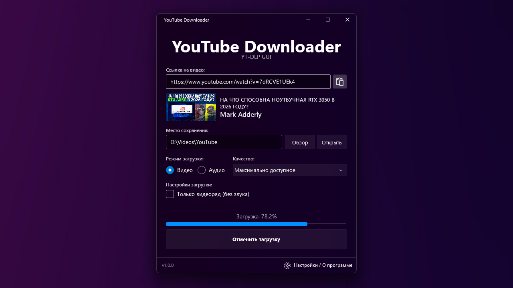

Adderly.Top
Adderly.Top
Лучший загрузчик видео с YouTube.
Красивая и удобная реализация графического интерфейса (GUI) для yt-dlp с элегантным предпросмотром загружаемого видео...

Системные требования
• Для запуска программы нужна библиотека NET Core 8.0.
• Для поддержки эффектов нужна любая версия Windows 11.